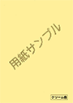
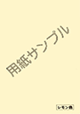
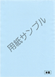
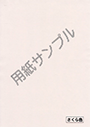
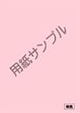
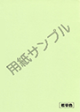

| 色 | クリーム色 | レモン色 | 水色 |
|---|---|---|---|
| 見本 ・ 特徴 |
クリーム色 カラー紙で一番よく使われます。クリーム色紙だけで全てのDM印刷を行うことも有り、オールマイティーな基本色です |
レモン色 よく使われます。 |
水色 文字が沈みがちになります。写真やイラストを入れる場合には注意が必要です。目立たせるときに使います。 |
| 色 | さくら色 | 桃色 | 若草色 |
| 見本 ・ 特徴 |
さくら色 封入物がたくさんあるときに差別する目的で使うときに適しています。 |
桃色 色が沈みますので、イラスト、写真には不適です。特に目立たせたい場合に使用します。 |
若草色 意外に目立つ色です。嫌みなく目立たせたい時に使用します。 |
※パソコンにより表示される色合いが変わります。自動見積りを依頼いただいたお客様にはメディアボックスより見本の色紙と印刷見本他資料を送付しています。ご確認ください。